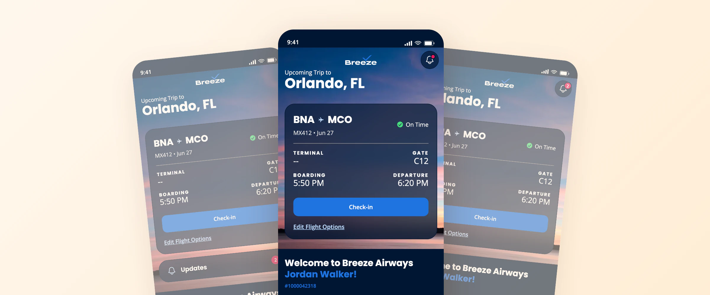
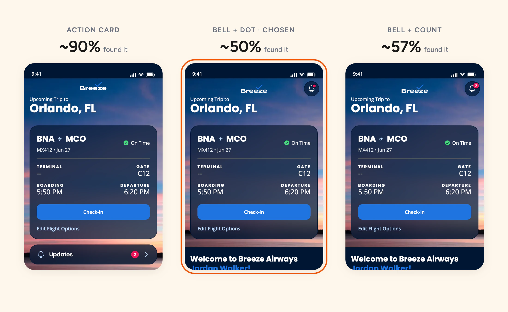

Three Rounds of Testing Measured the Wrong Thing
The Notification Center, and why 50% was the right answer
Executive Summary
The Notification Center is a log of the messages Breeze sends you. Its product impact is small, and I'm not including it for that. I'm including it for the research.
Three rounds of my own discovery testing turned out to be measuring a different part of the screen. I caught it, re-tested cleanly, and the clean test disproved my own explanation. The decision held, but on better reasoning.
Role:
Product Designer, UX Researcher
Duration:
May to June 2026
Responsibilities:
Study design, testing, analysis, UX/UI
The Question
Can People Find It?
The Notification Center sits behind a bell in the app's top corner. I tested whether Guests could find it from the home screen, using a flight delay as the scenario: "something changed with your flight, go find the updates."
14%
went to the bell first, round one
31%
after I restyled the bell
~60%
on a home with no trip on it
Same bell in every round. The only thing that moved the number was whether a trip card was on screen.
The Catch
The Test Was Scoring a Different Surface
The trip card showed a big "Delayed" badge. That badge answers "what happened to my flight?" faster than any bell. People who "failed" mostly succeeded at the real job: they saw Delayed and were done. We were scoring them for not finding a second door to information already in front of them.
So the rule I wrote down: before fielding a test, list every surface that answers the scenario's job and rank them by how visible they are. If the one you're studying isn't first, you're testing its competitor. It's now a standing check in our team's research review.
The Override
Shipping Against My Own Test Winner
Meanwhile a head-to-head (26 people per version) had a clear winner on paper: a labeled "Updates" card under the trip, 85% against the bell's 31%. I set the pass line before testing, and the card cleared it.
I chose the bell anyway, and wrote it down as an override, not a re-read of the numbers. My reasons: the card's win looked inflated by the Delayed badge and by the task saying "updates," which matched the card's label. And a quiet bell seemed findable enough when you need it.
The Clean Test
It Disproved My Explanation
So I re-ran it without the confounds: an on-time trip, no badge, neutral wording, plus a third version with a count on the bell.

The card still won by about 40 points. It wasn't the confounds. Both of my reasons for picking the bell were wrong.
The Decision
Same Call, Better Reason
The real question was never "which entry is easiest to find." It was what the Notification Center is for. The trip card is the primary surface: status, time, gate, found almost every time. The Notification Center is a record. You go looking for it when you want it, and the bell is the convention people already know.
A record that shouts competes for attention it shouldn't have. So about 50% finding it cold is fit for its role, and the count didn't help anyway. We went with the quiet bell and a dot.
That call depended on one check: urgent messages have to reach people by push, not by hoping they find the bell. I confirmed push opt-in was healthy before locking it.
Honest Limits
- The platform didn't record taps, so every number here is hand-coded from recordings. Treat them as directional
- The Notification Center's real job, the full message stream, still hasn't been cleanly discovery-tested
- The design is in code. I don't have usage data on it yet
What I'd point to is the method: set the bar before you test, check what your scenario is really measuring, and when you overrule your own data, say so out loud.